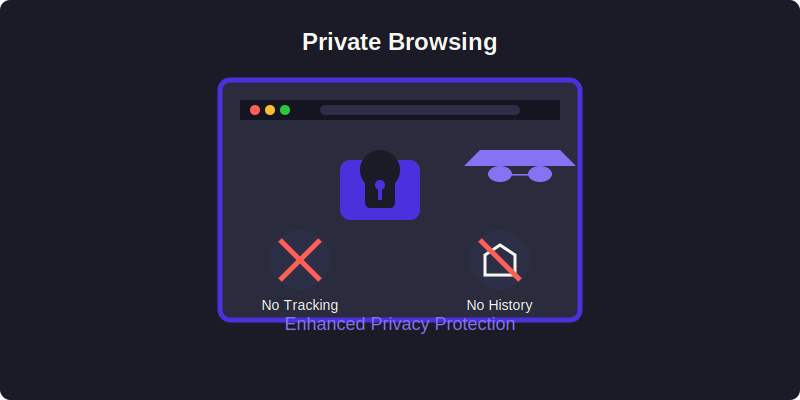

Private Browsing
Macro Browser's private browsing mode goes well beyond traditional "incognito" modes offered by other browsers, providing a comprehensive approach to privacy protection.

Key Features
Zero Local Data Storage
- No Browsing History: Your browsing history is never saved to disk
- No Cookies Persistence: Cookies are deleted when you close the browser
- No Cache Storage: Website data isn't stored between sessions
- No Download Records: Your downloads aren't recorded in browser history
- No Form Data: Saved forms and autocomplete information isn't stored
Enhanced Protection Mechanisms
- Fingerprinting Defense: Prevents websites from creating a unique fingerprint of your browser
- Tracker Blocking: Automatically blocks known tracking scripts and cookies
- Referrer Policy Control: Limits information sent in HTTP referrer headers
- Third-party Cookie Management: Strict controls on third-party cookies
- Intelligent Tracking Prevention: Machine learning systems to identify and block new trackers
How It Works
Macro Browser creates a secure browsing environment by:
- Isolating Sessions: Each browsing session runs in a separate, isolated container
- Memory-Only Mode: All temporary data is kept in memory, not on disk
- Sanitized Requests: Outgoing requests are sanitized to remove identifying information
- Automatic Cleaning: Data is automatically purged when the browser closes
- Runtime Protection: Active monitoring prevents privacy leaks during browsing
Privacy Dashboard
The privacy dashboard provides real-time information about your browsing session:
- Trackers Blocked: Count and details of blocked tracking attempts
- Fingerprinting Attempts: Details of prevented fingerprinting
- Cookie Monitor: Overview of allowed and blocked cookies
- Session Timer: How long your current session has been active
- Data Usage: Amount of data downloaded during your session
When to Use Private Browsing
Private browsing is ideal for:
- Sensitive Research: When you're looking up personal or sensitive information
- Public Computers: When using shared or public devices
- Online Shopping: To prevent targeted price discrimination
- Multiple Accounts: When accessing different accounts on the same service
- Testing Websites: To see how sites appear to new visitors
Advanced Privacy Options
Power users can configure additional privacy settings:
- Custom Privacy Rules: Create rules for specific websites or services
- JavaScript Controls: Enable/disable JavaScript on a per-site basis
- Media Permission Management: Fine-grained control over access to camera, microphone
- P2P VPN Integration: Route traffic through the P2P VPN for additional privacy
- WebRTC Leak Prevention: Prevent WebRTC from revealing your true IP address
Private vs. Standard Browsing
| Feature | Private Browsing | Standard Browsing |
|---|---|---|
| History Storage | None | Saved |
| Cookie Persistence | Session only | According to cookie settings |
| Cache | Memory only | Disk storage |
| Form Data | Not saved | Optionally saved |
| Extensions | Privacy-focused only | All enabled |
| Tracking Protection | Maximum | Configurable |
| Resource Usage | Slightly higher | Standard |
Private browsing is enabled by default in Macro Browser, but you can always switch to standard browsing mode when needed for specific use cases or to improve performance on trusted websites.